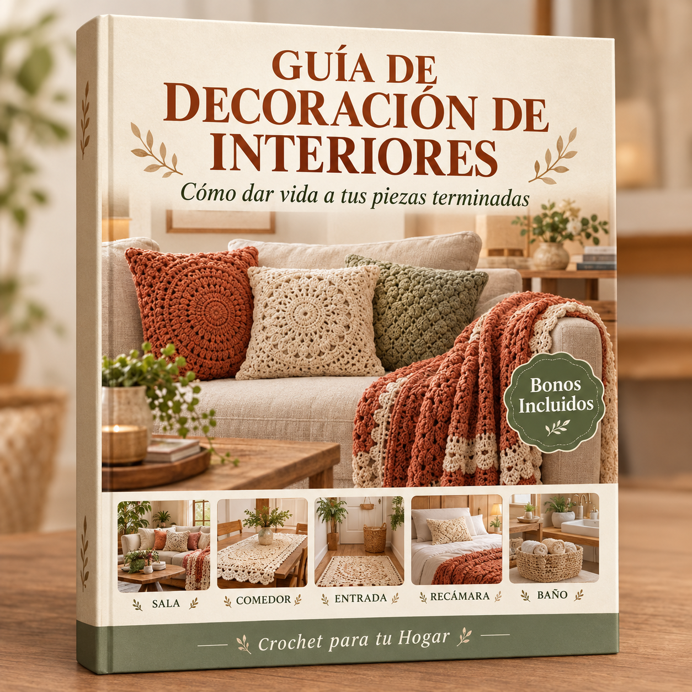

Los fundamentos que convierten piezas artesanales en decisiones de diseño intencionales
Cada pieza artesanal tiene su propio peso visual. Entender unos cuantos principios clave te ayudará a colocar tu trabajo de crochet de manera que se sienta con propósito, no amontonado.
Los arreglos simétricos (cojines iguales a ambos lados de un sofá, posavasos idénticos en cada lugar de la mesa) crean una sensación formal y calmada. Los arreglos asimétricos (una sola cobija texturizada sobre un sillón, un grupo de canastas en un rincón) se sienten relajados y modernos. La mayoría de los hogares se benefician de una mezcla: simetría en tu área principal de asientos para estabilidad, asimetría en puntos de acento para interés.
Prueba práctica: Párate en la entrada de una habitación y entrecierra los ojos. Si un lado se siente visualmente más pesado que el otro, redistribuye tus piezas. Una manta grande de un lado puede equilibrarse con un grupo de tres artículos más pequeños (una canasta, un juego de posavasos, un mantel individual) del otro.
Un error común es poner artículos de crochet pequeños sobre muebles grandes donde se pierden, o piezas sobredimensionadas en espacios reducidos donde abruman. Sigue esta guía general:
| Mueble / Espacio | Tamaño Ideal de Pieza de Crochet | Por Qué |
|---|---|---|
| Sofá seccional grande (250cm+) | Cobija tamaño completo (130×180cm) | Proporcional; las cobijas pequeñas parecen una servilleta olvidada |
| Sillón | Cobija de regazo (100×130cm) o una sola funda de cojín | Complementa sin ahogar el sillón |
| Mesa de comedor (6 asientos) | Camino de mesa 35×180cm o juego completo de manteles individuales | Llena la línea central sin competir con los platos |
| Mesa de noche | Carpeta o posavasos individual (10–20cm) | Superficie pequeña, pieza pequeña |
| Repisa de baño | Canasta pequeña (15×15cm) | Funcional, sin sobrecarga decorativa |
| Librero abierto | 2–3 canastas pequeñas distribuidas en los estantes | Añade calidez a superficies duras sin bloquear la vista |
El crochet se ve mejor cuando contrasta con las superficies a su alrededor. Una cobija texturizada sobre un sofá de piel liso crea interés. Una carpeta calada sobre madera rústica resalta ambas texturas. La clave es el contraste:
Agrupa tus artículos artesanales en números impares — tres es ideal. Tres cojines en un sofá (dos iguales, uno de acento), tres canastas de tamaños variados en un estante, tres posavasos abanicados en una mesa de centro. Las agrupaciones impares se sienten más naturales y visualmente dinámicas que los pares o cuartetos.
Al agrupar, varía al menos una dimensión: tamaño (pequeño, mediano, grande), altura (posavasos plano, canasta mediana, florero alto sobre una carpeta), o textura (liso, acanalado, con bolitas).
Dónde colocar qué, y por qué funciona
Cada habitación tiene su propio ritmo. Esta sección te da estrategias específicas de ubicación para cada espacio principal de tu hogar.
La sala es donde tu trabajo de crochet obtiene más visibilidad. Enfócate en tres zonas: asientos, mesa de centro y rincones de acento.
| Artículo | Ubicación | Impacto |
|---|---|---|
| Cobija | Drapeada sobre un brazo del sofá, doblada en tercios | Invita al tacto; añade color y textura a muebles neutros |
| Fundas de cojín (juego de 3) | Dos iguales en los extremos, una de acento en el centro o en un sillón adyacente | Ancla el área de asientos; unifica la paleta de colores |
| Juego de posavasos | Apilados o abanicados en la mesa de centro | Funcional; transmite cuidado e intención |
| Canasta organizadora (grande) | Junto al sofá o debajo de una consola | Oculta el desorden (controles, revistas) mientras muestra la artesanía |
| Canasta o bowl pequeño | En un librero o mesa lateral | Añade calidez a superficies duras; puede guardar objetos pequeños |
Nunca extiendas una cobija plana sobre el sofá — parece una funda. En cambio, dóblala a lo largo en tercios y drápeala diagonalmente sobre un brazo. Deja que 15–20cm caigan sobre el asiento para un look relajado. Para un look más estructurado, dóblala en un rectángulo prolijo y colócala sobre el cojín del asiento cerca de un brazo.
En un sofá de 3 asientos: coloca dos cojines más grandes iguales en las esquinas, un cojín más pequeño de acento descentrado. Mezcla texturas — uno liso, uno con bolitas o trenzas. Mantén los colores dentro de la misma familia o usa un solo contraste deliberado (ej., dos verde salvia + uno mostaza).
| Artículo | Ubicación | Impacto |
|---|---|---|
| Camino de mesa | Centro de la mesa, sobresaliendo 15cm en cada extremo | Define la línea central del comedor; añade textura a la madera o el vidrio |
| Manteles individuales (juego de 4–6) | Uno por lugar, a 2cm del borde de la mesa | Protege la superficie; crea un servicio de mesa cohesivo |
| Tapete de centro | Debajo de un florero o grupo de velas en el centro de la mesa | Ancla el arreglo focal; protege de marcas de agua |
| Cubiertas para respaldo de silla | Drapeadas sobre el larguero superior de sillas de madera | Suaviza las sillas duras; añade color (mejor para comedores de uso ocasional) |
Consejo: No uses camino de mesa y manteles individuales al mismo tiempo a menos que sean de texturas contrastantes (ej., camino liso + manteles texturizados). Duplicar texturas similares se ve pesado.
| Artículo | Ubicación | Impacto |
|---|---|---|
| Cobija de cama | Doblada a lo ancho a los pies de la cama, cubriendo el tercio inferior | Añade una capa de textura y color; invita a la comodidad nocturna |
| Cojines decorativos (2–3) | Frente a las almohadas para dormir, de tamaños variados | Crea profundidad; hace que la cama se vea arreglada con estilo, no solo tendida |
| Tapete de mesa de noche | Debajo de una lámpara o planta pequeña en la mesa de noche | Suaviza la superficie; protege de marcas de condensación |
| Canasta organizadora | Sobre o junto a la mesa de noche | Guarda libros, teléfono, objetos pequeños — práctica y bonita |
Técnica para drapear cobijas de cama: Desdobla la cobija y colócala a lo ancho de la cama en diagonal — no perfectamente recta. Deja que una esquina caiga un poco más de un lado. Esta asimetría se ve estilizada sin esfuerzo en lugar de rígida como hotel.
| Artículo | Ubicación | Impacto |
|---|---|---|
| Canasta organizadora (mediana) | En un estante o barra, con toallas enrolladas | Organización tipo spa; reemplaza contenedores de plástico |
| Canasta pequeña | Cerca del lavabo, con jabones o algodones | Eleva los artículos cotidianos; fácil de lavar |
| Organizador colgante | En la parte trasera de la puerta o un gancho de toallas | Guarda accesorios de cabello, artículos pequeños — ahorra espacio en la barra |
Cómo hacer que las piezas artesanales se vean profesionales, no caseras
La diferencia entre un hogar que se ve “decorado con crochet” y uno que se ve “estilizado profesionalmente” está en cómo combinas las capas y texturas.
Usar el mismo punto en todo crea monotonía. En cambio, combina texturas contrastantes dentro de la misma familia de colores:
| Par de Texturas | Dónde Usar | Efecto |
|---|---|---|
| Liso (punto bajo) + Con bolitas (punto bobble) | Dos cojines lado a lado en un sofá | Añade dimensión sin ruido visual |
| Denso (punto musgo) + Calado (patrón de abanico) | Cobija sobre una carpeta calada en una mesa | Crea profundidad y contraste |
| Acanalado (punto alto en relieve frontal) + Plano (medio punto alto) | Juego de manteles individuales alternando dos patrones | Variedad sutil en un juego cohesivo |
| Trenzas (trenza en relieve) + Semilla (punto semilla) | Cuerpo de manta vs. borde | Resalta el borde como elemento de diseño |
Tus piezas de crochet no deben vivir aisladas. Integrarlas con artículos comprados crea un look sofisticado y con capas:
Elige un “hilo conductor” — un elemento que se repita en cada habitación. Puede ser:
Elige uno — no los tres. Demasiados elementos repetidos hacen que el hogar se sienta como un showroom en lugar de un espacio vivido.
No necesitas redecorar por completo. Rota unas pocas piezas clave para refrescar cada temporada:
Luce tu trabajo de forma hermosa, ya sea para redes sociales o como recuerdo personal
Pasaste horas haciendo algo hermoso. Una buena foto toma 10 minutos y hace que ese trabajo se vea tan bien en pantalla como en persona.
La luz natural es innegociable para fotografía de crochet. La luz artificial aplana la textura, y el flash crea sombras duras que ocultan el detalle de los puntos.
| Tipo de Toma | Ideal Para | Cómo Preparar |
|---|---|---|
| Flat lay (directamente arriba) | Posavasos, manteles individuales, carpetas, artículos pequeños | Coloca el artículo en una superficie limpia. Súbete a una silla y toma la foto directo hacia abajo. Mantén el teléfono/cámara paralelo a la superficie. |
| Escena estilizada (ángulo de 45°) | Cobijas en sofás, cojines, canastas en contexto | Coloca el artículo en su entorno natural. Párate a 1–2 metros, agáchate ligeramente y toma a unos 45 grados. |
| Toma de detalle (close-up) | Textura de puntos, terminaciones, transiciones de color | Acércate a 15–20cm. Enfócate en un área pequeña. Usa modo retrato para desenfoque de fondo si está disponible. |
| Toma drapeada (ángulo lateral) | Mantas, cobijas, prendas con caída | Cuelga el artículo sobre el brazo de una silla o una escalera decorativa. Toma desde el costado para mostrar cómo cae la tela. |
Fondo DIY económico: Una lámina grande de espuma blanca de la papelería ($3–5) o una sábana blanca doblada crea un fondo limpio para flat lays. Para un look rústico, una tabla para cortar de madera funciona para artículos pequeños.
Un teléfono moderno toma excelentes fotos de crochet si sigues estas guías:
Mantener tus piezas artesanales hermosas por años
Una pieza de crochet bien cuidada durará décadas. Una que se meta al agua caliente no sobrevivirá el año. Así es como proteges tu trabajo.
| Fibra | Temp. del Agua | Método | Secado | Notas |
|---|---|---|---|---|
| 100% Algodón | Fría a tibia (30–40°C) | Máquina en ciclo delicado o a mano | Tender plano o secadora en bajo | Puede encoger 3–5% en el primer lavado; prelavar si haces artículos con medidas exactas |
| Acrílico | Fría a tibia (30°C) | Máquina en ciclo delicado | Tender plano (no usar secadora) | El calor daña el acrílico — se derrite y pierde suavidad permanentemente |
| Lana | Solo fría (20–30°C) | Solo a mano, sin agitación | Enrollar en una toalla, luego tender plano | Agitación = afieltrado. Nunca retorcer, exprimir ni lavar a máquina. |
| Mezcla Algodón-Acrílico | Fría (30°C) | Máquina delicado o a mano | Tender plano | Sigue las reglas de la fibra más delicada (acrílico) |
| Bambú / Tencel | Fría (30°C) | Preferible a mano | Tender plano, dar forma mientras húmedo | Pierde la forma cuando está mojado; manejar con cuidado |
La mayoría del daño en crochet se puede arreglar en casa:
| Problema | Solución | Tiempo |
|---|---|---|
| Estambre enganchado (aro jalado) | Usa una aguja lanera roma para empujar suavemente el aro hacia el revés. Trabaja desde el revés, jalando la holgura a través de los puntos vecinos hasta que la tensión se empareje. | 2–5 min |
| Puntos sueltos | Enhebra una aguja lanera con estambre del mismo color. Por el revés, pasa a través de la base del punto suelto para apretarlo. Asegura con un pequeño nudo si es necesario. | 5–10 min |
| Bolitas (pelusas) | Usa un quitapelusas o un rastrillo desechable sostenido plano contra la superficie. Trabaja suavemente en una dirección. El acrílico hace más bolitas que el algodón — pasarle el quitapelusas regularmente es normal. | 10–15 min |
| Agujero pequeño (1–3 puntos) | Usando estambre del mismo color y un gancho, recrea los puntos faltantes anclándote en las bases de los puntos circundantes. Esconde las hebras por el revés. | 15–30 min |
| Bordes enrollados | Bloqueo húmedo de la pieza: remoja en agua fría 20 min, fija con alfileres a la forma deseada en un tapete de bloqueo, deja secar completamente. | 20 min + secado |
Vuelve a bloquear tus piezas de crochet cuando:
Bloqueo rápido: Para artículos que solo necesitan un retoque ligero, rocía con agua de una botella rociadora, dale forma con las manos y tiende plano para secar. El bloqueo húmedo completo solo es necesario para cambios significativos de forma.
Uniendo todo con una visión de diseño unificada
El objetivo no es llenar cada habitación de crochet. Es usar unas cuantas piezas artesanales bien elegidas para darle a tu hogar un carácter cálido e intencional que se sienta únicamente tuyo.
Tus piezas de crochet deben complementar tu decoración existente, no pelear contra ella. Identifica qué estilo encaja con tu hogar (o el estilo que estás construyendo), y elige texturas y patrones en consecuencia:
| Estilo de Hogar | Mejores Texturas de Crochet | Mejores Patrones | Paleta de Colores |
|---|---|---|---|
| Moderno / Minimalista | Lisos, puntos limpios (PB, MPA) | Geométrico simple, colores sólidos, borde mínimo | Blanco, gris, negro, un acento (mostaza o salvia) |
| Rústico | Gruesos, texturizados (trenzas, bolitas) | Cuadro de la abuela clásico, ondas, punto canasta | Crema, azul suave, salvia, terracota |
| Boho | Calado, trama abierta, flecos | Mandala, inspirado en atrapasueños, estilo macramé | Tonos terrosos, mostaza, óxido, rosa polvoso, crema |
| Costero | Algodón ligero, puntos abiertos | Punto abanico, patrón de olas, vueltas simples | Blanco, beige arena, azul suave, espuma de mar |
| Escandinavo | Limpios, puntos densos | Punto musgo, punto semilla, rayas simples | Blanco, gris claro, rosa pálido, azul atenuado |
| Ecléctico / Maximalista | Mezcla libre — la variedad es el punto | Bloques de color, patchwork, motivos mixtos | Audaz, variado — une con un color recurrente |
Antes de comenzar a hacer artículos, planifica qué necesita cada habitación. Esto previene la acumulación aleatoria y asegura que cada pieza tenga un propósito:
No necesitas comprar estambre caro ni hacer docenas de piezas. Estas ideas de alto impacto y bajo costo crean un hogar notablemente diferente:
Ahora tienes el conocimiento de diseño para transformar tu hogar con piezas de crochet artesanales que se ven intencionales, profesionales y hermosas.
Empieza con una habitación, una pieza, un fin de semana. La transformación comienza en el momento en que colocas tu primer artículo terminado y ves cómo cambia el espacio.
Regresa a la colección principal para los patrones, y usa esta guía como tu referencia de estilismo cada vez que termines una nueva pieza.